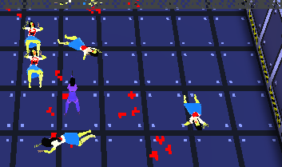
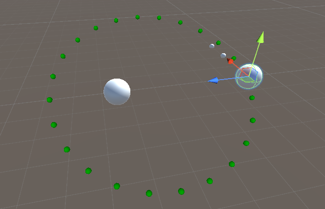
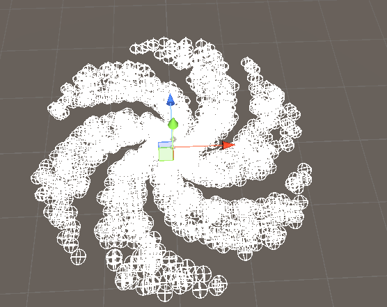
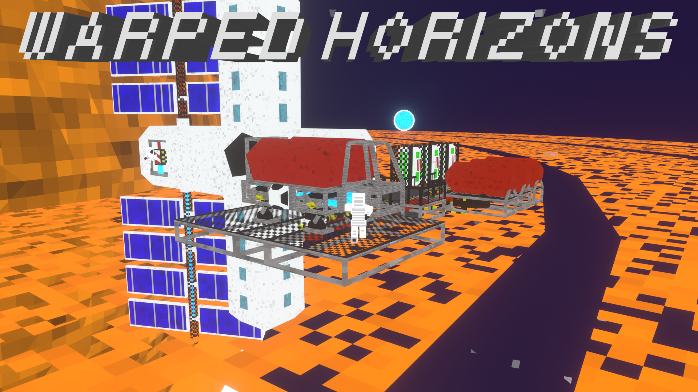
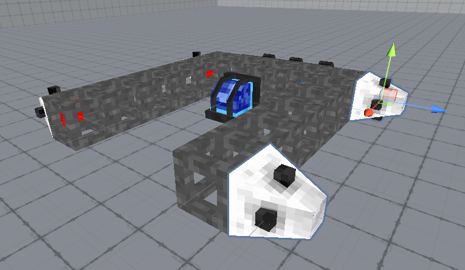
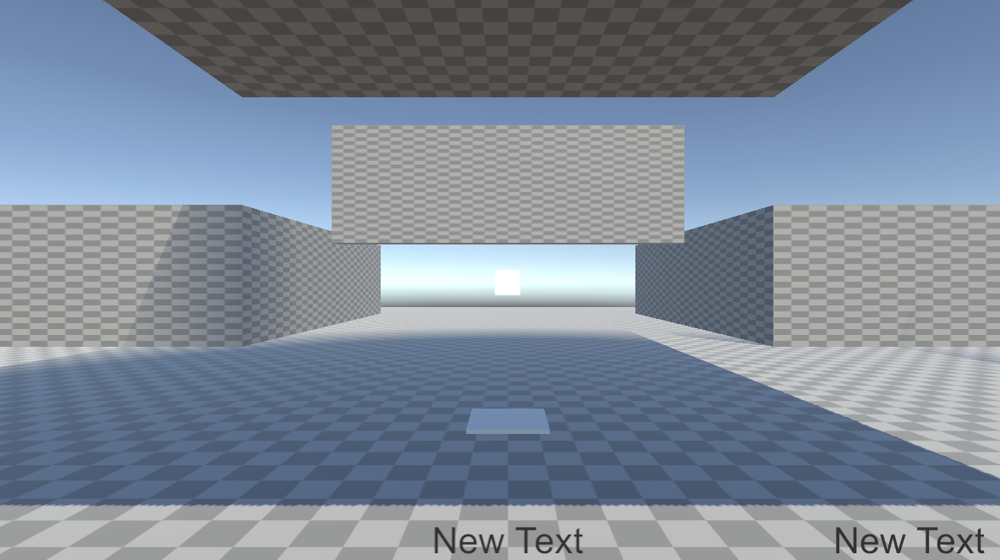
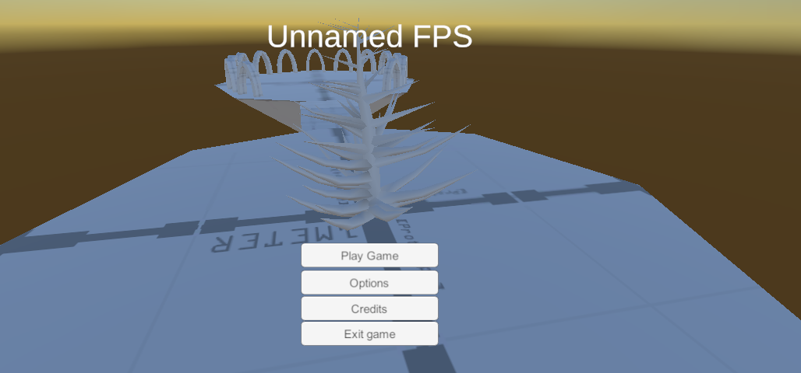

Here's are my many weird and unfinished games I've worked on
Pulverizer, Agents of the GrinderPulverizer was the first game I've worked on under this name. It's a top down zombie shooter, you play as "Agents" on a gameshow where you shoot reanimated corpses. I worked on this for a extremely long time, probably learned the most from this game. The biggest being how to actually make a fun game


If you wanna see more of the game, I have plenty of videos and pictures of it on my youtube channel, twitter, and tumblr. I also have a older verison of it released when it was unnamed and I wanted opinions from the tigsource forums
Old verison
Fetch Quest Simulator
This was a game I made for Ludum Dare 53, I was playing alot of zelda at the time. So I decided to make a zelda ripoff and despite overscoping, I actually made a pretty impressive game

Itch.io Verison
Destroy the Wizard
I made this for Ludum dare 55. I'm fairly proud of this one sense not only was it fairly fun to play, and I got a fairly high fun rating. I think it was in the top 500 games but I could be wrong

Itch.io Verison
Warped Horizons
This was the second big project I made after Pulverizer. A event happened to me that made me think about my future, so I decided to work on a big "Dream Game". In this game you where going to build space ships that allow for electrical systems and piping and fly around the galaxy





Itch.io Verison
Game is currently put on the backburner after I missed the steam nextfest deadline and I decided to work on a smaller game
Unnamed FPS
Working on Warped Horizons made me realize I need a smaller game that I can finish coding in a small amount of time, so I can focus on schooling and chores. So I decided to work on a game I made for 7DFPS, and fix it up sense it was extremely broken to the point of being unplayable. The game is a FPS wave shooter where you unlock levels and beat them



Broken 7DFPS verison
Misc
Smaller games I never released

This was a game engine I worked on called "Euclid", and got pretty far with. It's made in OpenTK, so sense everything is in C#, I was able to do alot. I eventually stopped because there's not much on exporting games

Around early 2025, I was burnt out on pulverizer and was quite angry. So I briefly worked on a small FPS called "Empire of dirt". I was able to get a quick prototype up, but it failed apart due to how long it took to make levels and the many issues with saving

Small horror game I worked on, It was very much inspired by a movie called "The raid redemption" where you're stuck in a quarantine block with zombies. There where design issues with it

"Heresay" started out when after the failure of Empire of dirt, I had the idea of using a Doom WAD editor to make levels and put them in unity. That turned into a doom clone, then into a exploration FPS where you play as a preacher descenting into hell with House of leaves style illusions. With multiplayer, coop, bots. I'll likely return to this sometime, sense I love the idea of explorating with a M16